Слово «робототехника» (в его английском варианте «robotics») было впервые использовано в печати Айзеком Азимовым в научно-фантастическом рассказе «Лжец», опубликованном в 1941 году.
В основу слова «робототехника» легло слово «робот», придуманное в 1920 г. чешским писателем Карелом Чапеком и его братом Йозефом для научно-фантастической пьесы Карела Чапека «Р. У. Р.» («Россумские универсальные роботы»), впервые поставленной в 1921 г. и пользовавшейся успехом у зрителей. В ней хозяин завода налаживает выпуск множества андроидов, которые сначала работают без отдыха, но потом восстают и губят своих создателей.
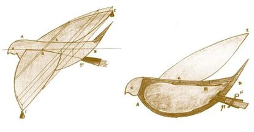Впрочем, некоторые идеи, положенные позднее в основу робототехники, появились ещё в античную эпоху — задолго до введения перечисленных выше терминов. Найдены остатки движущихся статуй, изготовленных в I веке до нашей эры. В «Илиаде» Гомера говорится, что бог Гефест сделал из золота говорящих служанок, придав им разум (т. е. — на современном языке — искусственный интеллект) и силу. Древнегреческому механику и инженеру Архиту Тарентскому приписывают создание механического голубя, способного летать (ок. 400 г. до н. э.). Множество подобных сведений содержится в книге «Робототехника: История и перспективы» И. М. Макарова и Ю. И. Топчеева, представляющей собой популярный и обстоятельный рассказ о роли, которую сыграли (и ещё сыграют) роботы в истории развития цивилизации.
История робототехники уходит в глубокую древность. Уже в те времена появились идеи создания технических средств, похожих на человека, и были предприняты первые попытки по их созданию. Статуи богов с подвижными частями тела (руки, голова) появились еще в Древнем Египте, Вавилоне, Китае. В 3 веке до н. э. римский поэт Клавдий упоминал об автомате, изготовленном Архимедом. Он имел форму стеклянного шара с изображением небесного свода, на котором воспроизводилось движение всех известных в то время небесных светил. Шар приводился в движение водой. А греческий изобретатель и физик Ктесибий из Александрии сконструировал водяные часы. Это был первый автомат для точного хронометрирования. До нас дошли книги Герона Александрийского (I век н.э.), где описаны подобные и многие другие автоматы древности . В качестве источника энергии в них использовались вода, пар, гравитация (гири). В «Театре автоматов» описано даже устройство целого театра, представление в котором разыгрывали фигурки-куклы, приводимые в движение с помощью системы зубчатых колес, блоков и рычагов.
В средние века большой популярностью пользовались различного рода автоматы, основанные на использовании часовых механизмов. Были созданы всевозможные часы с движущимися фигурами людей, ангелов и т. п. К этому периоду относятся сведения о создании первых подвижных человекоподобных механических фигур – андроидов. Так, андроид алхимика Альберта Великого (1193 – 1280) представлял собой куклу в рост человека, которая, когда стучали в дверь, открывала и закрывала ее, кланяясь при этом входящему. В 13 веке Альберт Великий создал автомат, ставший впоследствии известным как «говорящая голова», способный воспроизводить человеческий голос. В 1495 году Леонардо да Винчи разработал детальный проект механического человека, способного двигать руками и поворачивать голову. А в 1500 году он построил механического льва, который при въезде короля Франции в Милан выдвигался, раздирал когтями грудь и показывал герб Франции. Работы по созданию андроидов достигли наибольшего развития в XVIII в. Одновременно с расцветом часового мастерства. Французский механик и изобретатель Жак де Вокансон (1709-1789) создал в 1738 году первое работающее человекоподобное устройство (андроид), которое играло на флейте. «Флейтист» был ростом с человека. Подвижными пальцами он мог исполнять 11 мелодий с помощью заложенной в него программы. Вокансон также создал механическую утку, покрытую настоящими перьями, которая могла ходить, двигать крыльями, крякать, пить воду, клевать зерно и, перемалывая его маленькой внутренней мельницей, отправлять нужду на пол. Утка состояла из более чем 400 движущихся деталей и была однозначно признана венцом творения мастера.
Созданием автоматов также занимались швейцарские часовщики Пьер-Жак Дро (1721-1790) и его сын Анри Дро (1752-1791). От имени последнего позднее было образовано и понятие «андроид». Пьер-Жак Дро создал несколько автоматов, из которых наибольшую известность получили писец и художник. Писец представлял собой сидящую за столом девочку, которая выписывала аккуратным почерком буквы, слова и даже могла нарисовать собаку. При этом она плавно покачивала головой и опускала веки в такт движения руки. Вместе с сыном они создали девушку, играющую на клавесине. Сохранилось восторженное описание этой фигуры современником: «Девушка играет, шевелит губами, грудь ее поднимается и опускается при «дыхании», она смотрит на клавиши, в ноты, а иногда бросает взгляд на публику, по окончании «номера» встает и кланяется» . Эти человекоподобные игрушки представляли собой многопрограммные автоматы с оперативно сменяемыми программами.

Не остались в стороне и русские механики. Однако их конструкции отличались простотой. Так, механик И.П. Кулибин (1735-1818) построил в течении трех лет яичную фигуру – универсальные часы. Часы давали театрализованное представление и играли музыку. В этих часах было три самостоятельных механизма и три завода: часовой, боевой и курантовый, а также автоматические приборы для приведения в действие механизмов, воспроизводящих сцены, музыку и бой. Как свидетельствует сохранившаяся опись частей, составленная Кулибиным, часы яичной фигуры состояли из 427 деталей. Все они были изготовлены исключительно точно и тонко. Вместе с непосредственным созданием различных автоматических устройств, выполнявших функции живых существ, в средние века были заложены основы различных научных направлений. Еще у Леонардо да Винчи (1452-1519) делались попытки установить соответствие между механизмами и отдельными органами человека. А знаменитый французский философ и математик Рене Декарт говорил, что тела животных есть не что иное, как сложные машины.
В 1805 году Жозеф Мари Жаккард создает автоматический станок, на котором можно производить ткани с заранее запрограммированным рисунком с помощью перфокарт. Это изобретение явилось одним из важнейших событий, которые определи дальнейший технический прогресс промышленности и послужили толчком к развитию робототехники. Еще одним важным событием в области робототехники стало создание первой вычислительной машины. На основе способа программирования Жаккарда английский механик Чарльз Бэббидж (1792-1871) разработал счетную «Аналитическую машину», структурные особенности которой на целое столетие предопределили направление развития вычислительной техники.
Благодаря развитию электротехники и электроники реализуются потребности общества и производства в различных автоматических устройствах. Литература и искусство в это время играют роль катализатора процесса развития робототехники. Именно в этот период появляется много научно-фантастических произведений литературы, в которых роботы-андроиды играют главные роли.
Наиболее значительное место тема робототехники занимает в творчестве писателя-фантаста, американского ученого и популяризатора науки Айзека Азимова (1920-1992). В одном из своих рассказов, объединенных общим циклом «Я, робот», А. Азимов в 1942 г. попытался впервые сформулировать основные принципы поведения роботов и взаимодействия их с человеком, исходя из категорий добра и гуманности. Эти принципы, названные тремя законами робототехники, гласят:
1. Робот не может причинить вред человеку или своим бездействием допустить, чтобы человеку был причинен вред.
2. Робот должен повиноваться всем приказам, которые дает человек, кроме тех случаев, когда эти приказы противоречат Первому Закону.
3. Робот должен заботиться о своей безопасности в той мере, в какой это не противоречит Первому и Второму Законам .
Благодаря всеобщему интересу к роботам изобретателям удается разрабатывать оригинальные конструкции роботов-андроидов:
«Мистер Телевокс» (1928, американский инженер Дж. Уэнсли) — робот, имевший внешнее сходство с человеком, способный выполнять элементарные движения по команде, подаваемой голосом, и ставший экспонатом Всемирной выставки в Нью-Йорке . | 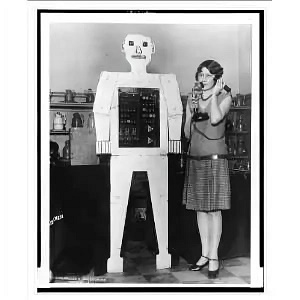 |
«Эрик» (1928) – робот, который на Выставке Британской ассоциации инженеров по моделированию «выступил» с небольшой речью. | 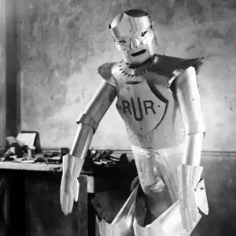 |
«Естествоиспытатель» (1928, под руководством доктора Нисимура Макота) — японский робот, способный с помощью электропривода манипулировать руками и головой. Впоследствии этот андроид стали считать родоначальником роботостроения в Японии. | 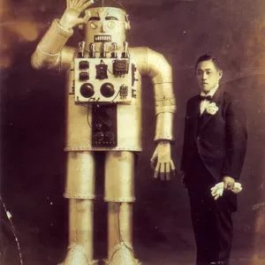 |
«Альфа» (1932, английский изобретатель Гарри Мей) — человекоподобный автомат, который по голосовым командам садился и вставал, двигал руками и говорил. | 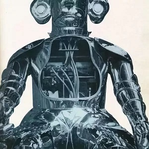 |
«Сабор» (австрийский изобретатель Август Губер) – автоматы, которые управлялись по радио и могли говорить, ходить, выполнять разные манипуляции. | 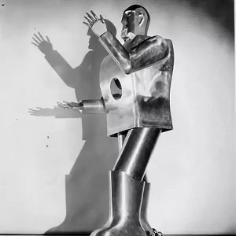 |
В2М (1936, московский школьник Вадим Мацкевич) — первый робот-андроид в России. В 1937 году был удостоен диплома Всемирной выставки в Париже. | 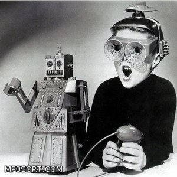 |
Несмотря на такой прорыв в сфере новой техники и демонстрацию творческих возможностей человека, все эти роботы имели крайне узкое практическое применение.
Проблемы внедрения роботов в промышленность как таковые не решались. Если обратиться к роботам как к программно-управляемым многоцелевым автоматам манипуляционного типа, предназначенным для использования в промышленности или научных исследованиях, то одним из самых первых промышленных манипуляторов был поворотный механизм с захватным устройством для удаления заготовок из печи, разработанный в США Бэббитом в 1892 году (патент США № 484870). Особую известность получили копирующие манипуляторы, разработанные Государственным научно-исследовательским институтом штата Орегон (США) ANL; предложенные им инструкции и принципы управления до сих пор находят применение во многих моделях промышленных роботов.
Одним из первых в ANL манипуляторов для обслуживания атомных станций был разработан в 1948 году под руководством Р. Герца. Это был двухнаправленный копирующий манипулятор. Благодаря силовому очувствлению оператор, который находился за толстой перегородкой в специальном помещении, имел возможность не только наблюдать на экране перемещение управляемого им копирующего манипулятора, но и ощущать руками величину усилий, которые развивает захват манипулятора. Использование такой силовой обратной связи позволило упростить процесс управления на расстоянии и расширить функциональные возможности дистанционных управляемых манипуляторов.
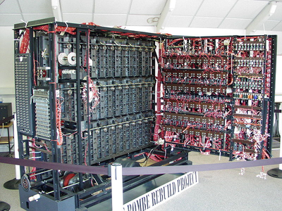В 1936-1937 годах английский математик Алан Мотисон Тьюринг (1912-1954) ввел концепцию «абстрактной вычислительной машины», способной с помощью простейших операций считывания и сдвига выполнять вычисления произвольной сложности. Эта машина в дальнейшем стала называться машиной Тьюринга и стала прообразом появившихся в конце 1940-х годов универсальных вычислительных машин.
Логическим завершением периода формирования теоретических основ вычислительной техники можно считать работы американского математика Джона фон Неймана (1903-1957). Именно ему принадлежит идея записи программы решения какой-либо задачи в память ЭВМ. Благодаря принципу хранимых программ вычислительные машины стали универсальными. Первыми компьютерами, в которых фоннеймановский принцип получил практическое воплощение, были вычислительная машина на электромагнитных релейных схемах Говарда Эйкена Mark I (1944 год) и электронная вычислительная машина ENIAC, разработанная в 1947 году под руководством Дж. Проспера Эккерта и Дж. Мокли, которые в последствии стали основателями знаменитой фирмы IBM.
Возникновение современных роботов следует отнести к 1959 г. В этом году в США были созданы первые промышленные манипуляторы с программным управлением, которые получили общепринятое название промышленных роботов (ПР) и положили начало коммерческому производству. В 50-х гг. XX века группа американских инженеров начала работу над проблемой применения теории управления в решении общих задач оптимального перемещения оборудования. Первопроходцами здесь стали два талантливых американских инженера – Джордж К. Девол (1912-2011) и Джозеф Ф. Энгельбергер (род. в 1925) . В 1954 г. Девол запатентовал в США способ перемещения предметов между различными участками предприятия на основе управляющей программы на перфокартах, сходных с предложенным когда-то Бэббиджем. Изобретение было призвано решить, в первую очередь, именно проблему гибкости, т.е. создания универсального транспортировочного устройства, легко перестраиваемого для выполнения других операций.
В 1956 г. Девол вместе с Энгельбергером, работавшим тогда в одной из аэрокосмических компаний, организовали первую в мире робототехническую компанию «Unimation» («Юнимейшн»), что означает «универсальная автоматизация» – сокращенное от «Universal Automation», в лаборатории этой компании и был создан первый в мире промышленный робот по патенту Девола, носивший скромное название «программируемое устройство для передачи предметов» и ставший прототипом последующих разработок.
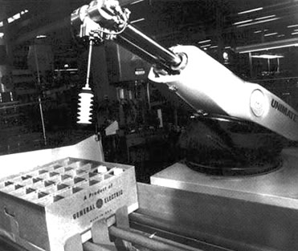В начале 1960-х гг. первые американские промышленные роботы с торговыми марками «Unimate» и «Versatran», созданные соответственно фирмами «Unimation», «American Machine and Foundry» (AMF) и предназначенные для обслуживания технологических процессов – поступили на промышленный рынок. Они представляли собой уже достаточно совершенные системы с обратной связью и контролируемой траекторией движения, имели числовое программное управление и память, как у ЭВМ. Уже в первых роботах «Unimate» и «Versatran» был реализован принцип программирования обучением.
Первые коммерческие успехи применения промышленных роботов явились мощным импульсом для их дальнейшего совершенствования. В начале 1970-х гг. появляются роботы, управляемые компьютерами. Первый мини-компьютер, управляющий роботом, был выпущен в 1974 г. фирмой «Cincinnati Milacron», одной из ведущих фирм – изготовителей роботов в США. В конце 1971 г. американской фирмой «INTEL» был создан первый микропроцессор, а несколькими годами позже появляются роботы с микропроцессорным управлением, что обусловило существенное повышение их качества при одновременном снижении стоимости.
В конце 1960-х – начале 1970-х гг. разрабатываются и создаются гибкие производственные системы (ГПС), так называемые «безлюдные» производства, представляющие собой производства будущего. Научно-технические достижения робототехники позволили в 1960-1980-х гг. создать ряд сложных научных и специальных робототехнических комплексов для исследования космического пространства (станции типа «Луна», аппараты «Луноход» – СССР; станции типа «Маринер», «Сервейер», «Викинг» — США и др.), а также освоения подводных глубин (аппараты «TV», «Москито», «Долфин» – Япония; аппараты «KURV», «RCV» – США; «Манта», «ОСА» – СССР; «ROV», «RM» – Франция; «ARCS» – Канада и др.).
Технический прогресс в развитии роботов был направлен, прежде всего, на совершенствование систем управления. Промышленные роботы первого поколения имели программное управление, в основном заимствованное у станков с числовым управлением. Второе поколение роботов – это очувствленные роботы, т. е. снабженные сенсорными системами, главными из которых являются системы технического зрения.
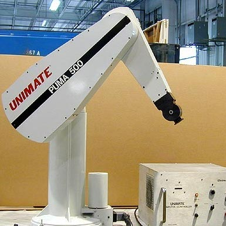Первые промышленные роботы с развитой сенсорной системой и микропроцессорным управлением появились на рынке и получили практическое применение в 1980-1981 гг. прежде всего на сборке, дуговой сварке, контроле качества для взятия неориентированных предметов, например с конвейера. К их числу относятся снабженные системами технического зрения роботы «Пума», «Юнимейт», «Ауто-плейс», «Цинциннати милакрон», сборочные робототехнические системы фирм «Хитачи», «Вестингауз» (система «Апас»), «Дженерал моторс» (система «Консайт»).
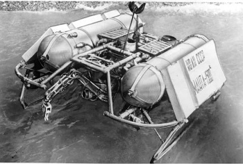Третье поколение роботов – это интеллектуальные роботы, т.е. с интеллектуальным управлением. Интеллектуальный робот – это робот конкретного назначения, в основных функциональных системах которого используются методы искусственного интеллекта. Возникновение интеллекта у роботов связано с развитием ЭВМ. В 1967 г. в США (Стэнфордский университет) был создан лабораторный макет робота, снабженного техническим зрением и предназначенного для исследования и отработки системы «глаз – рука», способной распознавать объекты внешней среды и оперировать ими в соответствии с заданием.
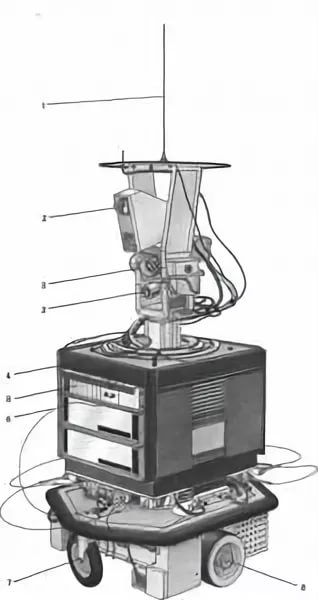В 1968 г. в СССР был создан телеуправляемый от ЭВМ подводный робот «Манта» с очувствленным захватным устройством, а в 1971 г. – следующий его вариант с техническим зрением и системой целеуказания по телевизионному экрану.
В 1969 г. в США в рамках работ по искусственному интеллекту был разработан экспериментальный макет подвижного робота «Шейки» с развитой системой сенсорного обеспечения, включая техническое зрение, обладавшего элементами искусственного интеллекта, что позволило ему целенаправленно передвигаться в заранее неизвестной обстановке, самостоятельно принимая необходимые для этого решения. Тогда он назывался интегральным роботом или мобильным автоматом с использованием принципов искусственного интеллекта. Этот робот состоял из Снимокролролподвижной части, ЭВМ SDS-940 и соответствующего программного обеспечения. Робот был создан для изучения процессов управления в сложной окружающей среде в реальном масштабе времени. Все функции, которые должен выполнять робот, можно разделить на три класса: решение задачи, восприятие, моделирование. Система управления робота, осуществляющая решение задач, использовала записанную в модели информацию для планирования и расчёта последовательности действий. По мере изменения внешней среды активными действиями самого робота или по другим причинам модель должна была преобразоваться с целью запоминания этих изменений. Кроме того, в модель должна была добавляться новая, текущая информация о внешней среде, которую робот приобретает в процессе её познания.
В 1971 г. в Японии также были разработаны экспериментальные образцы роботов с техническим зрением и элементами искусственного интеллекта: робот «Хивип», способный самостоятельно осуществлять механическую сборку простых объектов по предъявленному чертежу, и робот ЭТЛ-1.
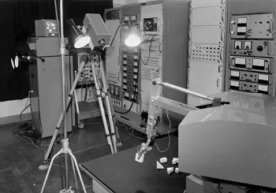В 1972-1975 годах в Киевском Институте кибернетики под руководством Н. М. Амосова и В. М. Глушкова был создан макет транспортного автономного интегрального робота (ТАИР). Робот демонстрировал целенаправленное движение в естественной среде, обход препятствий и т.п. Конструктивно ТАИР представлял собой трехколесную самоходную тележку, снабженную системой датчиков: оптическим дальномером, навигационной системой с двумя радиомаяками и компасом, контактными датчиками, датчиками углов наклона тележки, таймером и др. Особенностью, которая отличает ТАИР от многих других систем, созданных в СССР и за рубежом, является отсутствие в его составе компьютера в том виде, к которому мы привыкли. Основу системы управления составляет аппаратно реализованная нейронная сеть (узлы сети – специальные электронные схемы, собранные на транзисторах, связи между узлами – резисторы), на которой реализуются различные алгоритмы обработки сенсорной информации, планирования поведения и управления движением робота.
В этот период и в ряде других стран создают подобные экспериментальные установки, так называемые интегральные роботы, включающие манипуляторы, управляющие ЭВМ, различные средства очувствления и общения с человеком-оператором, которые предназначены для проведения исследований в области создания роботов следующих поколений, а также искусственного интеллекта.
Одновременно развернулись работы в новой специфической области робототехники — шагающие машины как принципиально новое транспортное средство повышенной проходимости, образцом для которого являются ноги животных и человека. Были созданы экспериментальные образцы четырех- и шестиногих транспортных машин, протезов ног человека, так называемых экзоскелетонов, для парализованных и тяжелобольных.
Робототехника как научная дисциплина, формируется совместными усилиями ученых и разработчиков техники в целостное научно-техническое направление, обогащается огромным опытом разработки и эксплуатации самых разнообразных роботов, робототехнических устройств и систем.